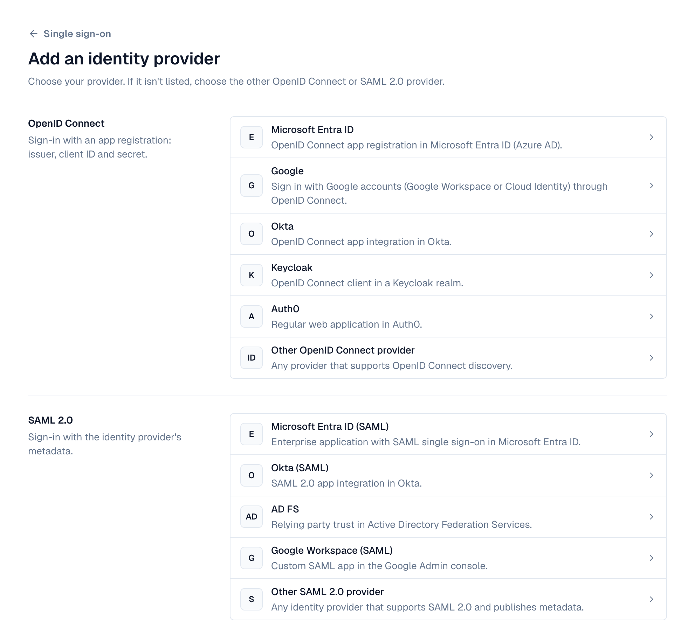
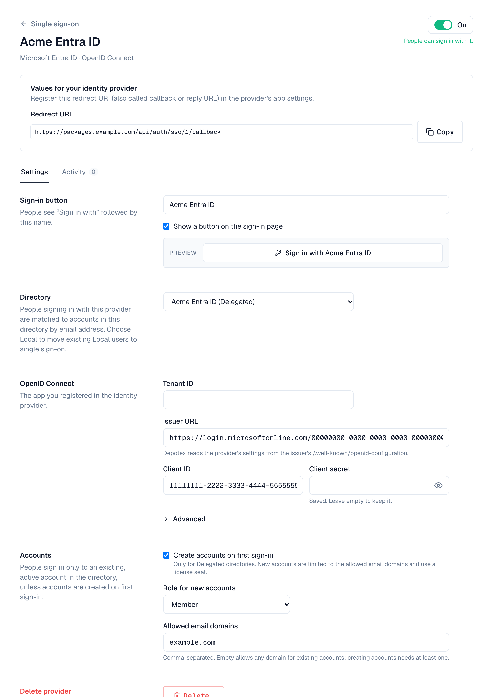
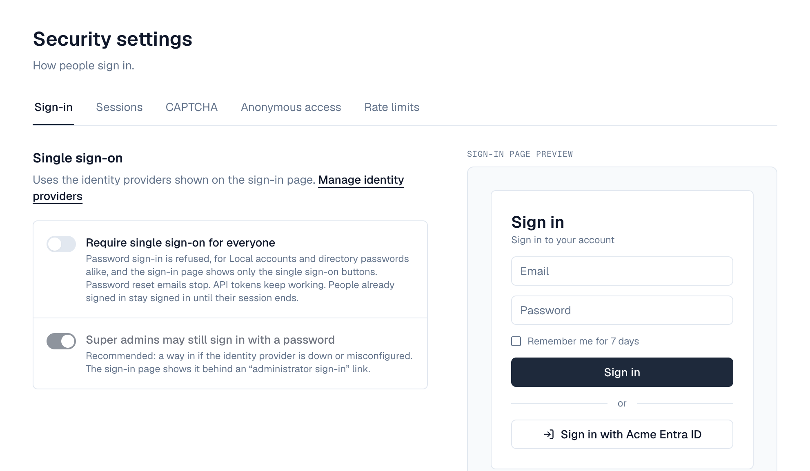

1. Overview
Single sign-on lets people sign in to Depotex with the account they already use at work, through your identity provider (IdP). Depotex supports the two standard protocols: OpenID Connect (OIDC) and SAML 2.0. Ready-made setups are included for Microsoft Entra ID, Google, Okta, Keycloak, Auth0, AD FS and Google Workspace; any other provider that follows either standard works too.
Each identity provider you add signs people into the accounts of one directory. The person is matched to their account by email address, so their role, groups and history in Depotex stay the same whichever way they sign in.
| Directory | How it works with single sign-on |
|---|---|
| Delegated | The usual choice. You create the accounts in Depotex (or let them be created at first sign-in); people sign in only through the identity provider. |
| LDAP, Active Directory | Accounts come from directory sync. Set the directory's sign-in mode to Single sign-on only, or keep the directory password and offer single sign-on as well. |
| SCIM, Microsoft Entra ID, Google Workspace | Accounts come from provisioning or sync; people always sign in with single sign-on. |
| Local | Existing Local accounts can sign in through a provider too (matched by email), which is how you move them to single sign-on. Accounts aren't created on first sign-in here. |
Single sign-on needs an Enterprise license. Without it, Settings → Single sign-on explains the upgrade and the sign-in buttons are hidden.
2. Before you start
- An Enterprise license, and the sso:manage permission (super admins).
- The Depotex address, set under Settings → General: the full address people open Depotex at, for example https://depotex.example.com. Every address you give the identity provider is built from it, and Depotex never takes it from the incoming request. A provider can't be turned on until it's set. Use https:// in production: browsers only send the sign-in cookie back from the identity provider over HTTPS.
- A directory for the people who will sign in (see the table above). For partners or staff who only use single sign-on, add a Delegated directory under Settings → Directories.
- Administrator access to your identity provider to register Depotex as an application.
- Every Depotex server must be able to reach the identity provider over HTTPS (to read its configuration, keys or metadata).
3. How setup works

- Open Settings → Single sign-on — Select Add identity provider. Providers are listed by protocol (OpenID Connect, SAML 2.0); pick yours, or the generic one if it isn't listed.
- Fill in the form and save — Enter the name for the sign-in button, the directory, and the details from your identity provider (see your provider below). Select Save and continue in the bar at the bottom; the bar says what is still missing (for example a directory). The provider is saved turned off.
- Give the identity provider Depotex's values — The provider's page now shows, at the top, the values to register (with the setup steps while it's off): the Redirect URI for OpenID Connect, or the Entity ID, Reply URL and Metadata URL for SAML. Each has a Copy button.
- Turn it on — Switch it On at the top of the provider's page (it saves at once). A Sign in with … button appears on the sign-in page (unless you untick Show a button on the sign-in page).
- Test it — In a private browser window, select the new button and sign in as a test user who has an account in the directory. The provider's Activity tab lists sign-ins of the last 7 days, failed ones with the reason (for example "No account in the directory"), and the providers list shows each one's last sign-in.
4. Fields

| Field | What to enter |
|---|---|
| Name on the sign-in button | People see Sign in with followed by this name, for example Contoso or Okta. Unique among your providers |
| Directory | The directory whose accounts people sign in to |
| Show a button on the sign-in page | On by default. Untick for a provider you only reach through a link |
| On | People can sign in with it. Off keeps the settings but hides the button and refuses sign-ins |
| Create accounts on first sign-in | Delegated directories only: see Accounts below |
| Allowed email domains | Comma-separated, for example example.com, example.org. Empty allows any domain for existing accounts; creating accounts needs at least one |
| Role for new accounts | Member or Organization admin, for accounts created at first sign-in |
OpenID Connect fields
| Field | What to enter |
|---|---|
| Issuer URL | The provider's issuer, starting with https://. Depotex reads everything else from <issuer>/.well-known/openid-configuration. For Entra ID, Okta, Keycloak and Auth0, enter the tenant, domain or realm and the issuer is filled in |
| Client ID | The application (client) ID from the provider |
| Client secret | The client secret. Stored encrypted and never shown again; leave it empty later to keep it |
| Scopes (Advanced) | Default openid email profile |
| Email claim (Advanced) | Which claim holds the email address. If it's empty or missing, email, then preferred_username, then upn are tried |
| Name claim (Advanced) | Default name |
SAML fields
| Field | What to enter |
|---|---|
| Identity provider metadata | From a URL (recommended: downloaded again every day, so certificate renewals are picked up) or Paste the XML |
| Email attribute (Advanced) | Empty: the NameID, then the usual email attributes (email, mail, the Microsoft and OID email claims) are tried |
| Name attribute (Advanced) | Empty: displayName, name and the usual name claims are tried |
| Sign authentication requests (Advanced) | Turn on if your identity provider requires signed requests. Depotex's signing certificate is in its metadata |
5. Microsoft Entra ID (OpenID Connect)
Recommended for Microsoft 365 and Azure organizations.
- Register an app — In the Microsoft Entra admin center, open Identity → Applications → App registrations → New registration. Name it Depotex, choose Accounts in this organizational directory only, and leave the redirect URI empty for now. Select Register.
- Copy the IDs — From the app's Overview, copy the Application (client) ID and the Directory (tenant) ID.
- Create a secret — Open Certificates & secrets → Client secrets → New client secret. Copy the secret's Value (not its ID) right away; it's shown once. Note its expiry date: sign-in stops working when it expires.
- Add the provider in Depotex — Settings → Single sign-on → Add identity provider → Microsoft Entra ID. Enter the Tenant ID (the issuer https://login.microsoftonline.com/<tenant>/v2.0 is filled in), the Client ID and the Client secret, choose the directory and Save and continue.
- Register the redirect URI — Back in Entra, open Authentication → Add a platform → Web and paste Depotex's Redirect URI. Select Configure.
- Make sure the email is sent — Open Token configuration → Add optional claim → ID → email. People whose mail attribute is empty are matched by their user principal name (preferred_username), which is the default email claim for this preset.
- Turn it on in Depotex — Switch it On at the top of its page, then test.
To let only some people use the app, set Assignment required to Yes under Enterprise applications → Depotex → Properties, then assign users or groups.
6. Google (OpenID Connect)
For Google Workspace or Cloud Identity accounts.
- Configure the consent screen — In the Google Cloud console, choose a project, open APIs & Services → OAuth consent screen, and choose Internal (only your organization's accounts).
- Create credentials — Open APIs & Services → Credentials → Create credentials → OAuth client ID, application type Web application, name Depotex.
- Add the provider in Depotex — Settings → Single sign-on → Add identity provider → Google. The issuer https://accounts.google.com is set. Enter the Client ID and Client secret from the previous step, choose the directory and Save and continue.
- Register the redirect URI — Back in the OAuth client, add Depotex's Redirect URI under Authorized redirect URIs and save.
- Turn it on in Depotex — Switch it On at the top of its page, then test.
With an External consent screen, any Google account could reach the sign-in step. Depotex still only signs in people who have an account in the directory (or whose domain you allowed for new accounts), but Internal is the safer choice.
7. Okta (OpenID Connect)
- Create an app integration — In the Okta Admin Console, open Applications → Applications → Create App Integration, choose OIDC - OpenID Connect and Web Application.
- Configure it — Name it Depotex, grant type Authorization Code. Leave the sign-in redirect URI for now (or enter a placeholder). Under Assignments, choose who may use it.
- Copy the credentials — Copy the Client ID and Client secret from the app's General tab.
- Add the provider in Depotex — Settings → Single sign-on → Add identity provider → Okta. Enter your Okta Domain (for example contoso.okta.com; the issuer https://<domain>/oauth2/default is filled in), the client ID and secret, choose the directory and Save and continue.
- Register the redirect URI — In Okta, set Sign-in redirect URIs to Depotex's Redirect URI and save.
- Turn it on in Depotex — Switch it On at the top of its page, then test.
The default issuer uses Okta's default authorization server. If your organization uses the org authorization server instead, set the issuer to https://<domain>; if it uses a custom one, use its issuer URI from Security → API.
8. Keycloak (OpenID Connect)
- Create a client — In the Keycloak admin console, select the realm, open Clients → Create client, type OpenID Connect, client ID depotex.
- Turn on authentication — On the next page turn Client authentication on and keep Standard flow. Save.
- Copy the secret — Open the client's Credentials tab and copy the Client secret.
- Add the provider in Depotex — Settings → Single sign-on → Add identity provider → Keycloak. Enter the Keycloak Domain (host name, with port if any) and Realm; the issuer https://<domain>/realms/<realm> is filled in. Enter the client ID and secret, choose the directory and Save and continue.
- Register the redirect URI — In the client's Settings, add Depotex's Redirect URI to Valid redirect URIs and save.
- Turn it on in Depotex — Switch it On at the top of its page, then test.
Keycloak users need an email address. If Email verified is off for a user, Keycloak sends email_verified: false and Depotex refuses the sign-in; verify the address or turn the flag on.
9. Auth0 (OpenID Connect)
- Create an application — In the Auth0 dashboard, open Applications → Applications → Create Application, type Regular Web Applications, name Depotex.
- Copy the settings — From the Settings tab copy the Domain, Client ID and Client Secret.
- Add the provider in Depotex — Settings → Single sign-on → Add identity provider → Auth0. Enter the Domain (the issuer https://<domain>/ is filled in, with the trailing slash Auth0 uses), the client ID and secret, choose the directory and Save and continue.
- Register the redirect URI — In Auth0, paste Depotex's Redirect URI into Allowed Callback URLs and save.
- Turn it on in Depotex — Switch it On at the top of its page, then test.
10. Other OpenID Connect providers
Any provider that publishes /.well-known/openid-configuration works (for example Ping Identity, OneLogin, JumpCloud, Authentik, Zitadel, Dex, GitLab). Register a confidential web application with the authorization code flow, register Depotex's Redirect URI, and enter the Issuer URL, Client ID and Client secret. Depotex uses PKCE and checks the ID token's signature, issuer, audience, expiry and nonce; the provider must sign ID tokens with a key from its published key set.
11. Microsoft Entra ID (SAML)
Use SAML if your organization standardizes on it; otherwise the OpenID Connect setup above is simpler.
- Add the provider in Depotex first — Settings → Single sign-on → Add identity provider → Microsoft Entra ID (SAML). You need the metadata URL from Entra, so open Entra in another tab.
- Create an enterprise application — In the Microsoft Entra admin center, open Identity → Applications → Enterprise applications → New application → Create your own application, name Depotex, Integrate any other application you don't find in the gallery (Non-gallery).
- Choose SAML — Open Single sign-on → SAML. Under SAML Certificates, copy the App Federation Metadata Url.
- Save in Depotex — Paste the metadata URL, choose the directory and Save and continue.
- Give Entra Depotex's values — In Basic SAML Configuration, set Identifier (Entity ID) to Depotex's Entity ID and Reply URL (Assertion Consumer Service URL) to Depotex's Reply URL. Save.
- Check the claims — Under Attributes & Claims, the default emailaddress claim (user.mail) is what Depotex matches on. If your users' mail is empty, change it to user.userprincipalname.
- Assign people — Under Users and groups, add the people or groups allowed to sign in.
- Turn it on in Depotex — Switch it On at the top of its page, then test.
12. Okta (SAML)
- Add the provider in Depotex — Settings → Single sign-on → Add identity provider → Okta (SAML). Keep the tab open; you'll paste the metadata URL after the next steps. (Or paste a placeholder, save with the provider off, and edit later.)
- Create the app integration — In the Okta Admin Console, Applications → Create App Integration → SAML 2.0, name Depotex.
- Enter Depotex's values — Single sign-on URL: Depotex's Reply URL (keep Use this for Recipient URL and Destination URL ticked). Audience URI (SP Entity ID): Depotex's Entity ID. Name ID format: EmailAddress; Application username: Email.
- Add an email attribute (optional) — Under Attribute Statements, add email → user.email.
- Copy the metadata URL — Finish the wizard, open the app's Sign On tab and copy the Metadata URL.
- Save in Depotex — Paste the metadata URL, choose the directory and save. Assign people to the app in Okta.
- Turn it on in Depotex — Switch it On at the top of its page, then test.
13. AD FS (SAML)
- Add the provider in Depotex — Settings → Single sign-on → Add identity provider → AD FS. Enter the AD FS metadata URL, normally https://<adfs host>/FederationMetadata/2007-06/FederationMetadata.xml, choose the directory and Save and continue.
- Add a relying party trust — In AD FS Management, open Relying Party Trusts → Add Relying Party Trust → Claims aware. Choose Import data about the relying party published online and enter Depotex's Metadata URL. (If AD FS can't reach Depotex, download the metadata from that URL and import the file.)
- Choose who may sign in — Pick an access control policy, for example Permit everyone or a group.
- Send the email address — Edit the trust's Claim Issuance Policy → Add Rule → Send LDAP Attributes as Claims: attribute store Active Directory, map E-Mail-Addresses to E-Mail Address and E-Mail-Addresses to Name ID (or add a Transform an Incoming Claim rule to Name ID with format Email).
- Turn it on in Depotex — Switch it On at the top of its page, then test.
Depotex's metadata includes its signing certificate. If AD FS requires signed requests, tick Sign authentication requests under Advanced.
14. Google Workspace (SAML)
- Add a custom SAML app — In the Google Admin console, open Apps → Web and mobile apps → Add app → Add custom SAML app, name Depotex.
- Download the metadata — On Google Identity Provider details, select Download metadata and keep the XML file.
- Add the provider in Depotex — Settings → Single sign-on → Add identity provider → Google Workspace (SAML). Choose Paste the XML, paste the file's content, choose the directory and Save and continue.
- Enter Depotex's values — Back in the Admin console: ACS URL = Depotex's Reply URL, Entity ID = Depotex's Entity ID, Name ID format EMAIL, Name ID Basic Information > Primary email.
- Turn the app on — In the app's User access, turn it ON for everyone or for selected organizational units.
- Turn it on in Depotex — Switch it On at the top of its page, then test.
Google's SAML certificate is valid for five years and pasted metadata isn't refreshed. When Google rotates it, download the new metadata and paste it again.
15. Other SAML 2.0 providers
Any identity provider that publishes SAML 2.0 metadata works (for example PingFederate, OneLogin, JumpCloud, Shibboleth, Keycloak in SAML mode). Give it Depotex's Metadata URL, or the Entity ID and Reply URL (binding HTTP-POST). Enter its metadata URL or XML in Depotex. Requirements:
- Responses or assertions are signed with a certificate listed in the provider's metadata.
- The person's email address is in the NameID or in an email attribute.
- Sign-in starts at Depotex (SP-initiated). Sign-ins started from the identity provider's portal (IdP-initiated) are refused, because they can't be tied to a sign-in started in this browser. Point portal tiles at Depotex's sign-in page instead.
- The HTTP-Redirect binding for requests and HTTP-POST for responses. The artifact binding isn't supported.
16. Accounts
When someone signs in through a provider, Depotex finds their account in the provider's directory:
- Already linked: after the first successful sign-in, the account is linked to the person's ID at the identity provider, so it keeps working if their email changes there.
- By email: otherwise, the account in the directory with the same email address (upper and lower case don't matter). If the provider says the email isn't verified, the sign-in is refused.
- Created on first sign-in: if there's no account, the provider has Create accounts on first sign-in turned on, the directory is Delegated and the email's domain is in Allowed email domains, an account is created with the chosen role. It uses a license seat; when none is free, the sign-in is refused.
The account must be active, and the directory enabled. If the same person has an account in a higher directory, that account is the one they must use, and single sign-on into the lower one is refused, as with passwords. Disabling the account or the directory in Depotex blocks single sign-on at once, even with a valid identity-provider session.
Allowed email domains also restrict existing accounts: with domains listed, only addresses in those domains can sign in through this provider.
17. Signing in
People select Sign in with … on the sign-in page, sign in at their identity provider and come back signed in. The sign-in must finish within 10 minutes and in the same browser it started in. Single sign-on sessions follow the same rules as password sessions (lifetime, sign out, sign out everywhere). Signing out of Depotex doesn't sign the person out of the identity provider.
When single sign-on can't sign someone in, they're sent back to the sign-in page with a message:
| Message on the sign-in page | Cause and fix |
|---|---|
| Single sign-on didn't work: the identity provider's answer couldn't be verified | Signature, issuer, audience or time check failed. Check the client secret (OIDC) or that the metadata is current (SAML); check the server clocks; check the Entity ID and Reply URL registered at the provider match Depotex's exactly |
| The sign-in took too long or was already used | More than 10 minutes passed, the page was reloaded, or the browser didn't send the sign-in cookie back. Use the Depotex address over https:// and start again from the sign-in page |
| You don't have an account here | No account with that email in the provider's directory. Create one, or turn on creating accounts on first sign-in |
| Your account can't sign in | The account or its directory is disabled |
| Your account is managed in another directory | A higher directory has an account for the same person; see Directory order |
| Accounts with your email address can't be created here | The email's domain isn't in Allowed email domains |
| Your identity provider says your email address isn't verified | Verify the address at the provider |
| Your identity provider didn't send an email address | Add an email claim or attribute at the provider, or set the email claim/attribute under Advanced |
| Sign-in was cancelled or refused by the identity provider | The person cancelled, isn't assigned to the app, or the provider refused |
| A sign-on policy doesn't allow you to sign in now | An organization policy on sign-in refused it |
| This sign-in option isn't available right now | The provider is off or deleted, the license doesn't include single sign-on, or the Depotex address isn't set |
| Your account can't be created: the license has no seats left | Free a seat or upgrade the license |
The reason is also in the audit log and the user's login history.
18. Requiring single sign-on
Once single sign-on works, you can stop password sign-in altogether on the Sign-in tab of Settings → Security (Enterprise, sso:manage). A preview beside the switches shows the sign-in page as it will look, before you save. The Single sign-on settings page shows whether it is required, with a link to that tab.

| With single sign-on required | |
|---|---|
| Sign-in page | Shows only the Sign in with … buttons. With the super-admin exception, an Administrator sign-in with a password link reveals the password form |
| Password sign-in | Refused for everyone (Local passwords and directory passwords alike) with "Your organization requires single sign-on". A wrong password still gets the usual "invalid email or password", so the message never helps someone guessing |
| Forgot password | No reset emails are sent to accounts that must use single sign-on |
| API tokens | Keep working: they aren't a sign-in |
| People already signed in | Stay signed in until their session ends. Use Sign out everywhere on a user to end it sooner |
- Make sure everyone can use single sign-on — Every person who needs access must have an account in a provider's directory. To move Local users, add a provider for the Local directory: they are matched by email.
- Sign in with single sign-on yourself — In a private window, check it works for you.
- Turn it on — Open Settings → Security → Sign-in, turn on Require single sign-on for everyone, keep Super admins may still sign in with a password on (recommended), Save and confirm.
Safety checks. It can only be turned on while at least one provider is on and shown on the sign-in page, and while it's on, Depotex refuses to turn off or delete the last such provider. To take away the super-admin exception you must have signed in with single sign-on yourself at least once. If the license no longer includes single sign-on, the requirement is lifted automatically so nobody is locked out.
Without the super-admin exception, nobody can sign in with a password. Keep the exception unless your security policy forbids it, and protect super-admin passwords well.
Locked out? If the identity provider is down and no password sign-in is allowed, a server operator sets SSO_ENFORCEMENT_OVERRIDE=true on one server and restarts it. That server ignores the requirement, so an administrator can sign in with a password through it and fix the provider or turn the requirement off. Then remove the variable and restart again. In a cluster, reach that server directly (not through the load balancer), or set the variable on every node for the duration.
19. Changing the Depotex address
The address under Settings → General is used for every redirect URI, entity ID and reply URL. If you change it, every identity provider must be updated with the new values (shown on each provider's page), or sign-in stops working. The Email settings page edits the same address.
20. Events
sso.provider.create, sso.provider.update and sso.provider.delete are raised when providers are added, changed (including turned on or off) or removed; sso.enforcement.update when single sign-on is required or no longer required (or the super-admin exception changes); site.settings.update when the Depotex address changes. Password sign-ins refused because single sign-on is required raise auth.login.failed with reason sso_required. They can be blocked by subscribers and used in automation, for example to alert when a provider is turned off. Sign-ins through a provider raise the usual sign-in events, and accounts created on first sign-in raise user.create. See Events.